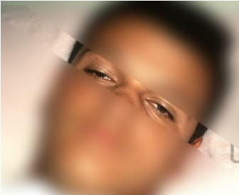
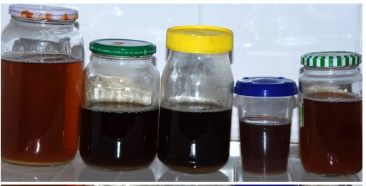

Visão geral
A cascavel: poucos acidentes, alta letalidade
O gênero Crotalus é representado no Brasil por uma única espécie — Crotalus durissus — com várias subespécies, entre elas C. d. terrificus (Sul/Sudeste), C. d. cascavella (Nordeste), C. d. collilineatus (Centro-Oeste) e C. d. marajoensis (Amazônia). Responde por cerca de 7–10% dos acidentes ofídicos notificados no Brasil, mas apresenta a maior taxa de letalidade entre os gêneros de importância médica — podendo ultrapassar 1,5–2% quando o atendimento é tardio.
A cascavel habita regiões secas e abertas (cerrado, caatinga, campos, restinga) e é reconhecida pelo guizo (chocalho) na ponta da cauda — estrutura formada por anéis de queratina que se acumulam a cada troca de pele. Possui fosseta loreal, cabeça triangular destacada e pupilas em fenda vertical.
Ponto-chave clínico
⚡ Diferença fundamental vs. botrópico
No acidente crotálico, as manifestações locais são mínimas — dor discreta, edema leve ou ausente, sem necrose significativa. O quadro é predominantemente sistêmico: neurotóxico + miotóxico. Isso pode enganar: a vítima parece "bem" no local da picada, mas está evoluindo com envenenamento sistêmico potencialmente fatal. Não subestime o acidente crotálico pela aparência benigna do local!
Composição e ações do veneno
Tríade crotálica
O veneno da cascavel contém toxinas com três ações principais, numa ordem de importância clínica diferente do botrópico:
- Ação neurotóxica (crotoxina): a crotoxina é a principal toxina do veneno crotálico. É composta por duas subunidades: a fosfolipase A₂ (PLA₂ — subunidade catalítica) e a crotapotina (subunidade ácida, que direciona a PLA₂ ao alvo). Age na junção neuromuscular, inibindo a liberação de acetilcolina na fenda sináptica (bloqueio pré-sináptico). O resultado é uma paralisia muscular descendente: ptose palpebral → fácies miastênica → oftalmoplegia → disfagia → disfonia → paralisia da musculatura respiratória (insuficiência respiratória aguda).
- Ação miotóxica (crotoxina + crotamina): a crotoxina e a crotamina causam destruição direta de fibras musculares esqueléticas → rabdomiólise. A liberação maciça de mioglobina na circulação resulta em mioglobinúria (urina escura, "cor de coca-cola") e risco de necrose tubular aguda → IRA. A CPK (creatinofosfoquinase) eleva-se acentuadamente — é o marcador laboratorial da rabdomiólise.
- Ação coagulante: semelhante ao botrópico, enzimas tipo-trombina convertem fibrinogênio em fibrina de forma desregulada → consumo de fibrinogênio → incoagulabilidade sanguínea. Porém, hemorragias clinicamente significativas são raras no crotálico — a coagulopatia tem menos expressão clínica do que no botrópico.
Manifestações clínicas
Quadro local — mínimo
No local da picada: dor discreta (ou sensação de "dormência"/parestesia), edema mínimo ou ausente, sem as bolhas e necrose exuberantes do botrópico. A marca das presas pode ser discreta ou visível. O aspecto benigno do local é enganoso — o veneno já está agindo sistemicamente.
Quadro sistêmico — predominante
Fácies miastênica (fácies neurotóxica)
O quadro sistêmico se instala em horas e segue uma sequência clássica:
- Ptose palpebral bilateral — sinal precoce e muito sugestivo;
- Fácies miastênica — ptose + queda da mandíbula + expressão apática (olhar "sonolento");
- Oftalmoplegia (paresia dos músculos oculares) → visão turva, diplopia;
- Midríase bilateral;
- Disfagia e disfonia — dificuldade de deglutir e alteração da voz;
- Paralisia da musculatura respiratória — nos casos graves, pode evoluir para insuficiência respiratória aguda → necessidade de intubação e ventilação mecânica.

Ptose palpebral bilateral — paciente com manifestação de ptose palpebral do tipo bilateral em acidente crotálico. Sinal precoce e característico do envenenamento por cascavel, causado pelo bloqueio pré-sináptico da crotoxina na junção neuromuscular.
Foto: Marcelo Ribeiro Duarte — Instituto Butantan
Rabdomiólise
Mialgia + colúria = sinal de alarme
- Mialgia generalizada — dor muscular difusa, que pode ser intensa;
- Colúria — urina escura ("cor de coca-cola") = mioglobinúria;
- CPK elevada (frequentemente > 10× o normal);
- LDH e AST também elevadas (origem muscular);
- Risco de IRA por necrose tubular aguda (depósito de mioglobina nos túbulos renais).

Colúria (urina "cor de coca-cola") — mioglobinúria por rabdomiólise no acidente crotálico. A mioglobina liberada pela destruição muscular se deposita nos túbulos renais, podendo causar necrose tubular aguda e IRA.
Foto: Marcelo Ribeiro Duarte — Instituto Butantan
Fácies miastênica (ptose + mandibular)
Visão turva / diplopia
Oftalmoplegia / midríase
Mialgia generalizada
Colúria (urina "cor de coca-cola")
Oligúria / anúria
Insuficiência respiratória
Parestesia local
Edema local discreto
Cefaleia, mal-estar, vômitos
O que mais mata
Atenção máxima
⚠️ IRA por mioglobinúria + insuficiência respiratória
As duas principais causas de óbito no acidente crotálico são:
- Insuficiência renal aguda por depósito de mioglobina nos túbulos renais — prevenida por hidratação vigorosa e diurese forçada (30–40 mL/h no adulto; 1–2 mL/kg/h na criança);
- Insuficiência respiratória aguda por paralisia da musculatura respiratória — exige suporte ventilatório imediato (ventilação mecânica invasiva).
O atendimento tardio (> 6h) aumenta significativamente o risco dessas complicações — daí a importância do diagnóstico precoce e da soroterapia em tempo hábil.
Exames laboratoriais
Exames essenciais na admissão
- CPK (creatinofosfoquinase) — marcador de rabdomiólise; pode atingir valores muito elevados;
- LDH, AST/TGO — complementam avaliação de lesão muscular;
- Ureia e creatinina — rastreamento de IRA;
- TC (tempo de coagulação) — frequentemente alterado (incoagulável), embora hemorragia clínica seja rara;
- Coagulograma completo (TAP, TTPa, fibrinogênio);
- Hemograma — pode haver leucocitose;
- EAS / urina I — pesquisa de mioglobinúria (urina escura, pH ácido);
- Eletrólitos (Na⁺, K⁺) — hipercalemia pode ocorrer na rabdomiólise com IRA;
- Gasometria — se sinais de insuficiência respiratória.
Classificação de gravidade e soroterapia (SAC)
| Gravidade | Fácies miastênica | Mialgia | Mioglobinúria | Ampolas SAC |
|---|
| Leve | Ausente ou tardia | Discreta ou ausente | Ausente | 5 |
| Moderado | Discreta ou evidente | Discreta | Pouco evidente ou ausente | 10 |
| Grave | Evidente / intensa | Intensa | Presente (colúria) | 20 |
Sobre o soro anticrotálico (SAC) — Butantan
- Cada ampola de SAC (10 mL) neutraliza ≥ 15 mg de veneno-referência de Crotalus durissus terrificus.
- A dose é definida pela gravidade, não pelo peso/idade — crianças recebem a mesma dose que adultos.
- Via intravenosa, diluído em SF 0,9% ou SG 5%, infusão a 8–12 mL/min (ajustar conforme tolerância).
- Ter sempre à disposição: adrenalina IM (1:1.000), hidrocortisona IV e difenidramina IV para reações anafiláticas.
- Doses adicionais raramente são indicadas — avaliadas pelo TC e evolução clínica.
- Alternativa: pode-se usar o SABC (soro antibotrópico-crotálico), que neutraliza venenos de Bothrops e Crotalus — útil quando a identificação do gênero é incerta.
- Armazenar entre +2 e +8 °C; nunca congelar; usar imediatamente após abrir.
Manejo das complicações
Prevenção e tratamento da IRA
- Hidratação IV vigorosa — manter diurese ≥ 30–40 mL/h (adulto) / 1–2 mL/kg/h (criança);
- Se oligúria persistir: manitol 20% (5 mL/kg na criança; 100 mL no adulto) ou furosemida IV;
- Nos casos com comprometimento renal estabelecido: procedimento dialítico;
- Monitorar potássio sérico — a hipercalemia na rabdomiólise com IRA pode causar arritmias graves.
Insuficiência respiratória
- Monitorar padrão respiratório (FR, SpO₂, gasometria) em todo paciente com fácies miastênica;
- Se sinais de fadiga respiratória ou dessaturação → intubação orotraqueal + ventilação mecânica imediata;
- A paralisia é reversível com a neutralização do veneno e suporte — mas pode durar horas a dias;
- A neostigmina (anticolinesterásico) NÃO é eficaz no crotálico (o bloqueio é pré-sináptico, não por competição no receptor — diferente da Miastenia Gravis).
Diagnóstico diferencial crotálico × botrópico
| Característica | Botrópico | Crotálico |
|---|
| Quadro local | Exuberante (edema, bolhas, necrose) | Mínimo (parestesia, edema discreto) |
| Quadro sistêmico dominante | Hemorrágico (coagulopatia, sangramento) | Neurotóxico + miotóxico |
| Fácies miastênica | Ausente | Presente (sinal clássico) |
| Colúria/mioglobinúria | Rara | Frequente nos moderados/graves |
| Complicação fatal principal | IRA (por hipoperfusão/ação direta) | IRA (por mioglobina) + insuf. respiratória |
| Soro específico | SAB | SAC |
| Soro polivalente | SABC (neutraliza ambos) |
Fontes: Instituto Butantan (bula do soro anticrotálico, 2024); Guia de Vigilância em Saúde / Ministério da Saúde (2022); FioCruz — Manual de Diagnóstico e Tratamento de Acidentes por Animais Peçonhentos (2001); Manual de Identificação de Serpentes Peçonhentas — UFMS (CC BY); Nota Técnica MS nº 64/2021 (checklists CVE-SP). Conteúdo educativo — não substitui protocolo institucional vigente.